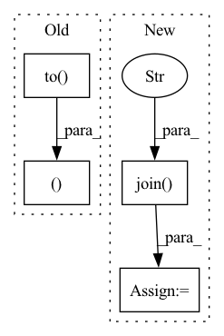

Pattern ID :10777
Before Change
speech = torch.transpose(torch.Tensor(self.feature_list[index][2]), 0, 1).to(self.device)
speech_len = torch.LongTensor([self.feature_list[index][3]]).to(self.device)
if self.spemb:
spemb = torch.Tensor(self.feature_list[index][4]).to( self.device)
return text, text_len, speech, speech_len, spemb
return text, text_len, speech, speech_len
def __len__(self):
return len(self.feature_list)After Change
def __getitem__(self, index):
transcript = self.path_to_transcript_dict[self.key_list[index]]
path = self.key_list[index]
wave, sr = sf.read(os.path.join("Corpora/CSS10/" , path) )
if self.ap is None:
self.ap = AudioPreprocessor(input_sr=sr, output_sr=16000, melspec_buckets=80, hop_length=256, n_fft=1024)
text = self.tf.string_to_tensor(transcript).long()In pattern: SUPERPATTERN
Frequency: 3
Non-data size: 4
Instances Fragment ID: 37158764
Project Name: digitalphonetics/ims-toucan
Commit Name: 1e192df888be8f1dc1c20971132b31fe73153b7d
Time: 2021-02-22
Author: florian.lux@ims.uni-stuttgart.de
File Name: TransformerTTS/TransformerTTSDataset.py
M Class Name: TransformerTTSDataset
N Class Name: TransformerTTSDataset
M Method Name: __getitem__(2)
N Method Name: __getitem__(2)
M Parent Class: Dataset
N Parent Class: Dataset
M File Name: TransformerTTS/TransformerTTSDataset.py
N File Name: TransformerTTS/TransformerTTSDataset.py
M Start Line: 14
M End Line: 21
N Start Line: 32
N End Line: 44
Before Change
self.n_relation = self.config["n_relation"]
entity_edges, word_edges = side_data
self.entity_edges, self.word_edges = [ele.to( self.device) for ele in entity_edges], word_edges.to(self.device)
self.build_model()
def build_model(self, pretrained_embedding=None):After Change
self.n_positions = self.opt["n_positions"]
self.response_truncate = self.opt.get("response_truncate", 20)
// copy mask
dpath = os.path.join( DATA_PATH, "kgsf" )
dfile = DownloadableFile("1zrszs2EcNlim3l7O0BH6XbalLMeUcMFv", "redial.zip",
"f627841644a184079acde1b0185e3a223945061c3a591f4bc0d7f62e7263f548",
from_google=True)
build(dpath, dfile) Fragment ID: 37158765
Project Name: rucaibox/crslab
Commit Name: 7170808360daa341d8a6e8e9fc80446ff85670e0
Time: 2020-12-01
Author: wxl1999@foxmail.com
File Name: crslab/model/kgsf_model.py
M Class Name: KGSFModel
N Class Name: KGSFModel
M Method Name: __init__(4)
N Method Name: __init__(4)
M Parent Class: BaseModel
N Parent Class: BaseModel
M File Name: crslab/model/kgsf_model.py
N File Name: crslab/model/kgsf_model.py
M Start Line: 36
M End Line: 63
N Start Line: 44
N End Line: 75
Before Change
with torch.no_grad():
for i, (data, target) in enumerate(tqdm(data_loader)):
data, target = data.to(device), target.to(device)
output = model(data)
//
// save sample images, or do something with output hereAfter Change
// total_metrics[i] += metric(output, target) * batch_size
df = pd.DataFrame({"image_id": image_id, "label": label})
out_csv = os.path.join( args.out_dir, "test_pred.csv" )
df.to_csv(out_csv, index=False)
logger.debug("done.")
Fragment ID: 37158763
Project Name: deeperlearner/pytorch-template
Commit Name: 49ac2e7c4e18177db31ae741c8dfd7cdbf5ca0f0
Time: 2020-11-11
Author: b04202035@g.ntu.edu.tw
File Name: test.py
M Class Name: AnonimousClass
N Class Name: AnonimousClass
M Method Name: main(1)
N Method Name: main(1)
M Parent Class:
N Parent Class:
M File Name: test.py
N File Name: test.py
M Start Line: 15
M End Line: 62
N Start Line: 20
N End Line: 76